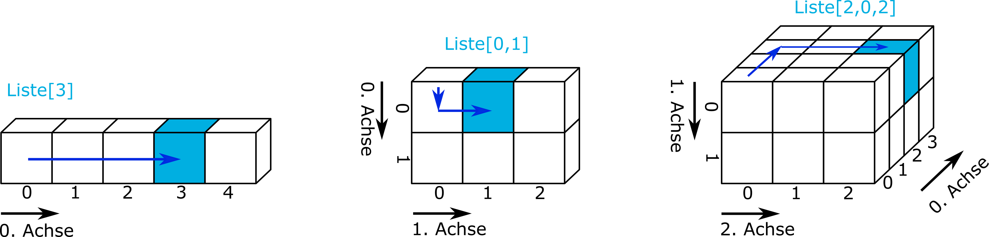
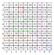

list = np.array([1, 2, 3, 4, 5, 6])5 Slicing
5.1 Basic Slicing with Numeric Indices

To select data within an array, use the following formats:
[a]returns the single value at positiona[a:b]returns all values from positionaup to (but not including)b[a:b:c]returns values from positionatob-1in steps ofc
# Selecting the first element
list[0]np.int64(1)# Selecting the last element
list[-1]np.int64(6)# Selecting a range of elements
list[1:4]array([2, 3, 4])For two-dimensional arrays, you use a comma to separate the selection along the first and second dimensions.
matrix = np.array([[1, 2, 3], [4, 5, 6]])# Selecting a single element
matrix[1,1]np.int64(5)For three-dimensional arrays, an additional index is used, again separated by commas. The order remains: first, second, then third dimension.
matrix_3d = np.array([[[1, 2, 3], [4, 5, 6]], [[7, 8, 9], [10, 11, 12]]])
print(matrix_3d)[[[ 1 2 3]
[ 4 5 6]]
[[ 7 8 9]
[10 11 12]]]# Selecting a specific element
matrix_3d[1,0,2]np.int64(9)5.2 Slicing with Boolean Values (Boolean Masking)
Boolean slicing uses a boolean mask to select specific elements from an array. The mask is an array of the same length as the original, consisting of True or False values.
# Create a sample array
a = np.array([1, 2, 3, 4, 5, 6])
# Create the mask
maske = a > 3
print(maske)[False False False True True True]This results in an array of boolean values. Applying this mask to the original array returns all elements where the mask is True.
# Applying the mask
print(a[maske])[4 5 6]
Warning
Using boolean arrays is only possible with the NumPy module. This approach cannot be applied to native Python lists. In such cases, you must iterate over the list manually.
a = [1, 2, 3, 4, 5, 6]
result = [x for x in a if x > 3]
print(result) [4, 5, 6]
Mini Exercise: Array Slicing
Select the colored sections of the array matrix using the slicing techniques you just learned.

matrix = np.array([
[2, 11, 18, 47, 33, 48, 9, 31, 8, 41],
[55, 1, 8, 3, 91, 56, 17, 54, 23, 12],
[19, 99, 56, 72, 6, 13, 34, 16, 77, 56],
[37, 75, 67, 5, 46, 98, 57, 19, 14, 7],
[4, 57, 32, 78, 56, 12, 43, 61, 3, 88],
[96, 16, 92, 18, 50, 90, 35, 15, 36, 97],
[75, 4, 38, 53, 1, 79, 56, 73, 45, 56],
[15, 76, 11, 93, 87, 8, 2, 58, 86, 94],
[51, 14, 60, 57, 74, 42, 59, 71, 88, 52],
[49, 6, 43, 39, 17, 18, 95, 6, 44, 75]
])